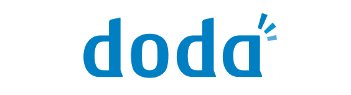
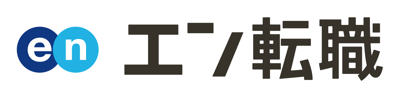
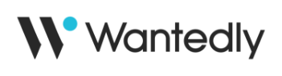
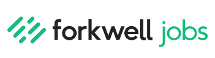

小売業・従業員120名
サンプル応募から初回連絡までの平均各1か月
- 支援前
- 24時間
- 支援後
- 4時間
- 課題
- 店舗責任者が応募通知を確認しきれない
- 打ち手
- 初期連絡と面接枠の管理を一本化
月額採用代行サービス
業界を問わず、社内で手が足りない採用実務を引き受けます。媒体運用だけ、面接調整だけでもご依頼いただけます。
30分・オンライン・その場での契約不要

RELIAL全体の実績
Challenges

Working cycle
方針はあるけれど動かす人が足りないときに。毎月の運用で見えた課題を、次の施策に反映します。
Support menu
相談したい行にチェックを入れると、選択内容を問い合わせフォームへ引き継ぎます。複数選択も可能です。
Cases
課題と業務の組み合わせを示す架空例です。社員数・期間・成果はすべてサンプルです。
応募から初回連絡までの平均各1か月
スカウト返信率各2か月
30分・オンライン・その場での契約不要
Pricing
募集職種や月間の応募件数を伺い、委託する範囲と社内で担う範囲を決めます。
月額10万円〜
担当業務・媒体数・対応件数・稼働量に応じて個別にお見積もりします。
30分・オンライン・その場での契約不要
Channels
求人広告、求人検索エンジン、ダイレクトリクルーティングなど、今お使いの媒体からご相談いただけます。






掲載は取り扱い媒体の一例です。募集職種・経験層・既存契約に合わせてご提案します。
Getting started
任せたい業務を共有
職種・媒体・件数の確認
範囲・稼働量・費用を提示
権限・原稿・面接枠の確認
担当者が運用を開始
数値と対応状況を共有
FAQ
はい。スカウト配信だけ、応募後の連絡だけなど、現在の採用体制に合わせて組み合わせられます。委託の開始点と社内へ引き渡す時点を決めてから運用に入ります。
利用中の媒体名・契約プラン・管理者権限をお知らせください。既存の契約を活かせるかを確認し、募集職種への反応を見て継続・改善・追加を提案します。
ご希望の職種、必要な経験、対象エリアをもとに検索条件を整理します。送信前に文面やアプローチ方針を確認し、運用後は対象者ごとの反応をもとに見直します。
先に貴社の面接枠・連絡方法・担当者を伺います。RELIALが候補日を回収して案内し、判断が必要な問い合わせや条件に関する質問は貴社へ引き継ぎます。面接・選考結果の決定は貴社の担当です。
募集職種、採用予定人数と時期、運用中の媒体、月間のおおよその応募・スカウト件数をご用意ください。件数が見えていない場合も、今いちばん時間がかかっている作業から整理できます。
一律の送信数や対応件数を公表したプランではありません。媒体ごとの運用方法、文面作成の範囲、連絡の頻度などを確認し、対応量と超過が見込まれるときの扱いを見積もり時に整理します。
繁忙期に面接調整へ人手を回したい、募集終了後は分析だけ頼みたい、といった変更は担当者へご相談ください。追加作業の量・費用・切り替え時期を確認し合意したうえで進めます。
連絡する時間帯、メールの差出人、面接枠の更新方法、回答に迷ったときの確認先を整理します。すでに選考が進んでいる方は直近の連絡と次の対応予定を共有し、重複連絡を防ぎます。
媒体別の応募数と費用に加え、初回連絡までの時間、面接の設定率、スカウトの返信率などから課題に合う指標を選びます。単に応募の総数を追うだけでなく、求める人材との接点が増えたかも振り返ります。
採用方針からチームとつくりたいSES・不動産・建設・介護の企業には業種特化の採用支援があります。月額代行は業界を問わず、日々の実務を委託したい場合に向いています。参加特典の条件は契約ごとにご案内します。育成したい職種や訴求から見直す場合は、業種特化の採用支援をご覧ください。